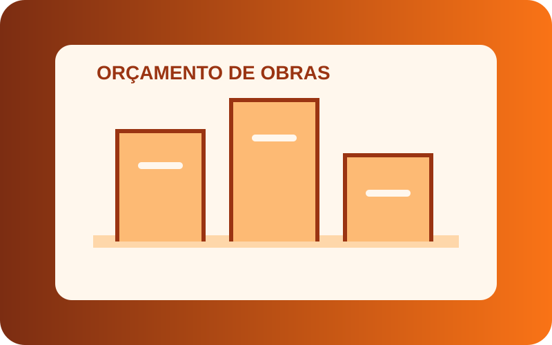

Gestão
Frota Inteligente
Sistema conceptual para acompanhar veículos, consumo e indicadores de frota.
Saber mais →Portfólio
Uma seleção de projetos reais e conceitos desenvolvidos para praticar tecnologia e organização.
Sistema conceptual para acompanhar veículos, consumo e indicadores de frota.
Saber mais →Conceito de plataforma para organização de vendas, pedidos e operações digitais.
Saber mais →
Ferramenta conceptual para organizar materiais, custos e estimativas de uma obra.
Saber mais →Protótipo de interface pensado para apresentar informação e recursos universitários.
Saber mais →